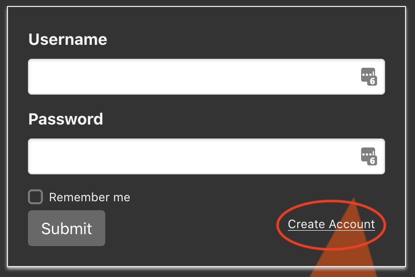
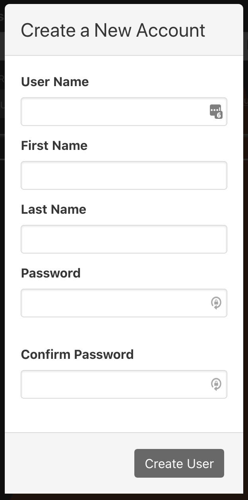
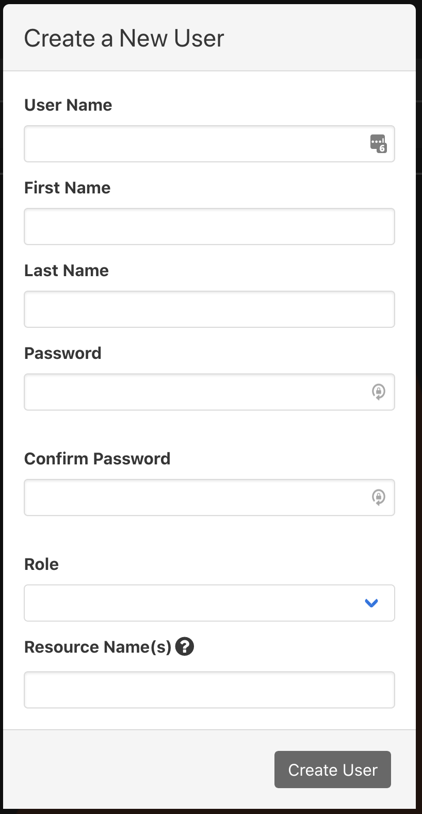

When in disabled mode, no user authentication or authorization occurs. Users
do not have to authenticate, and all actions are allowed.
To use disabled mode, the UI should be built with VUE_APP_AUTH=disabled (if
Docker is being used to build the UI, use Docker build arg
PHENIX_WEB_AUTH=disabled) and the UI server should be started without the
-k/--jwt-signing-key option set.
When in enabled mode, user authentication and authorization occurs within
phenix directly. Users have to authenticate to the phenix UI, and certain
actions are prohibited based on the role assigned to the user.
To use enabled mode, the UI should be built with VUE_APP_AUTH=enabled (if
Docker is being used to build the UI, use Docker build arg
PHENIX_WEB_AUTH=enabled) and the UI server should be started with the
-k/--jwt-signing-key (and optionally the --jwt-lifetime) option set.
When in proxy mode, user authentication is expected to occur in a reverse
proxy that sits in front of phenix but user authorization still occurs within
phenix directly. Users authenticate to the proxy, and certain actions are
prohibited based on the role assigned to the user.
To use proxy mode, the UI should be built with VUE_APP_AUTH=proxy (if Docker
is being used to build the UI, use Docker build arg PHENIX_WEB_AUTH=proxy) and
the UI server should be started with the -k/--jwt-signing-key and
--proxy-auth-header (and optionally the --jwt-lifetime) options set.
In addition, the reverse proxy should add a header to requests being proxied
that contains the username of the authenticated user, with the name of the
header matching what --proxy-auth-header is set to (for example,
--proxy-auth-header=X-phenix-user).
If a user is able to authenticate to the proxy but is not yet a user in phenix,
they will be added as a phenix user automatically and assigned the Disabled
role that will deny all actions until an admin user can assign them a different
role.
Choose the Create Account link off the login page and complete all fields
in the Create a New Account dialogue. This will initiate a message to an
administrator's account who can then activate the account, setting the
role(s) and resource name(s).


From the Users tab, click the + button to create a new user. Here the
administrator will add the role(s) and resource
name(s).

Create a YAML or JSON file at /etc/phenix/users.[yml|json] with the
following structure. When the phenix UI starts, it looks for this file and
adds any users present in the file that are not already present in phenix.
For users in the file that already exist, phenix ensures the user role
matches what's in the file and updates it as necessary. This file is also
automatically watched, so any users added to the file while phenix is
running will automatically be added to phenix.
The login page is self-descriptive. Using the Remember me checkbox will set a
token to local storage so that you can remove the requirement to enter a
Username and Password each time the page or site is reloaded.
If an administrator starts the UI server with the following command,
authentication is enabled:
$> phenix ui -k <some_string>
Without the -k (or --jwt-signing-key), authentication is disabled.
An administrator is able to click on the username on the table in the Users tab
to update a user. They can update First Name or Last Name, Role,
Experiment Names, and Resource Name(s).
Global Admin is the administrator level account and has access to all
capabilities, to include user management. Global Admins also have access to all
resources. The following table provides a high-level overview of all the
available roles and their access rights.
Role
Limits
List
Get
Create
Update
Patch
Delete
Global Admin
Can see and control absolutely anything/everything.
E V U
E V U
E V U
E V U
E V U
E V U
Global Viewer
Can see absolutely anything/everything, but cannot make any changes.
E V U
E V U
Experiment Admin
Can see and control anything/everything for assigned experiments, including VMs, but cannot create new experiments.
E V
E V
V
E V
V
V
Experiment User
Can see assigned experiments, and can control VMs within assigned experiments, but cannot modify experiments themselves.
E V
E V
V
Experiment Viewer
Can see assigned experiments and VMs within assigned experiments, but cannot modify or control experiments or VMs.
E V
E V
VM Viewer
Can only see VM screenshots and access VM VNC, nothing else.
V
Key: E - experiment resource, V - VM resource, U - user resource